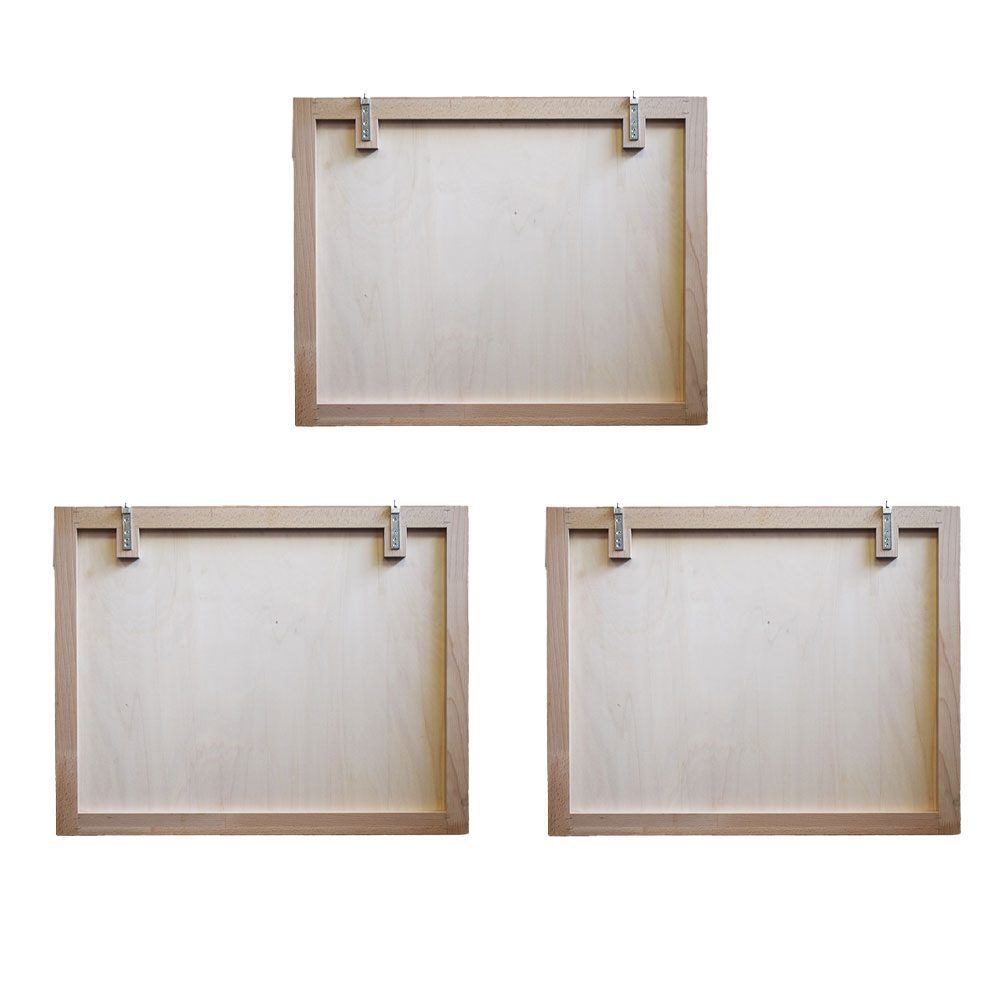

Extrasound Wave Wooden acoustic panel
A handmade wooden acoustic panel: strips of different woods and a raised sound wave, for the room where you listen to music.
- Three panels, about 198 cm
- Strips in mixed woods
- Wall-mounted
Woods on requestSee the woods
- Beech
- Oak
- American walnut
- Cherry
- Ash
- Doussié
- Wenge
€900 for the three panelsprices on extrasound.it

A surface that breaks up reflections.
The strips vary in length and thickness, so the surface is never flat. Sound hitting it doesn't all bounce back in the same direction, and the room sounds less harsh.
In the centre, the sound wave is made of dark strips, in Wenge or stained black, that stand out further than the others. It's the part you notice first, and also the one that does the most work.
Where to put it.
The Wave works on the walls where sound bounces the most. Pick a position: you'll see the sound reach the panel and get scattered in many directions, instead of all coming straight back.
It also works in a living room or a home cinema. If you're not sure where to put it, we'll help you with positioning and installation.

Three panels, one wave.
The Wave is split into three panels of 66 × 52.5 cm. Each has a wooden frame and a plywood backing, onto which the strips are glued by hand with wood glue.
They hang on the wall with metal brackets and, side by side, re-form the wave along its whole length: about 198 cm.
Made by hand, strip by strip.
I cut the strips to size and glue them one by one onto the plywood backing. That's why every Wave is one of a kind: the tones and the shape of the wave change from one panel to the next.
It's a finished model: you'll find it ready in our showroom in Cesena.
Dimensions.
Every Wave is made by hand: the woods and the shape of the wave vary slightly from one piece to the next.